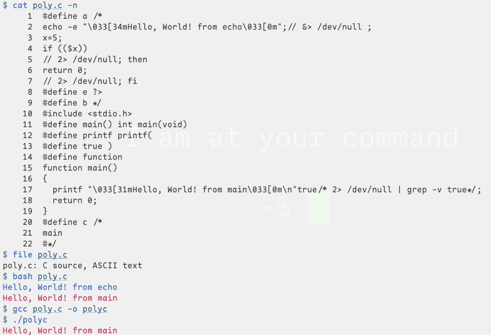

Introduction
Recently, while studying compiler theory materials, I pondered the question “why do we need lexical, syntactic, and semantic analysis?” This is actually not quite the right question, because for programming languages, design precedes implementation—first, we design the language’s syntax and semantics, then write a compiler to check if a program is syntactically correct and conforms to semantic rules, and convert it to target machine code based on predefined semantics. From a “context” perspective, typically, syntax is context-free, while semantics handles context-dependent issues. For example, in x = 1; print(x); and x = 2; print(x);, although both use print(x), they have different contexts, leading to different results.
Example 1 - =
For instance:
foo = 3
foo = 4
If we only perform syntax analysis, this program follows both Python and Haskell syntax. However, when we do semantic analysis, as a Python program, it means “first assign 3 to foo, then assign 4 to foo”. As a Haskell program, it’s invalid because Haskell semantics don’t allow repeated bindings. The core reason is that Python’s = semantically means assignment (memory overwrite), while Haskell’s = means binding (name binding), allowing only single bindings to ensure no side effects and order independence.
Example 2 - polyglot
The following program is modified from polyglot(computing) wikipedia
#define a /*
echo -e "\033[34mHello, World! from echo\033[0m";// &> /dev/null;
x=5;
if (($x))
// 2> /dev/null; then
return 0;
// 2> /dev/null; fi
#define e ?>
#define b */
#include <stdio.h>
#define main() int main(void)
#define printf printf(
#define true )
#define function
function main()
{
printf "\033[31mHello, World! from main\033[0m\n"true/* 2> /dev/null | grep -v true*/;
return 0;
}
#define c /*
main
#*/
It conforms to both C and Bash syntax, but compiling/interpreting it yields different results because the two programs have different semantics (of course, C and Bash syntax are also different; the core of polyglot writing is utilizing different symbols for comments/macros/… between languages. The use and layout of symbols (broadly speaking) is what syntax&lexical analysis concerns):
